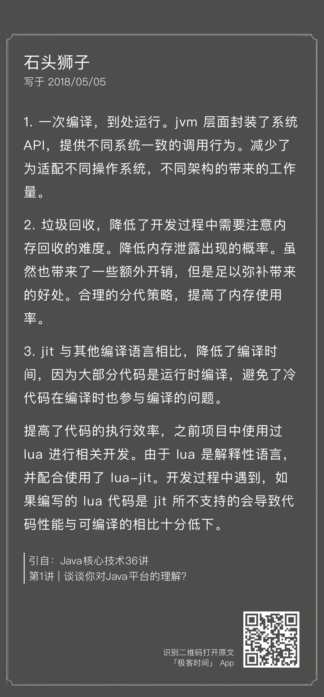
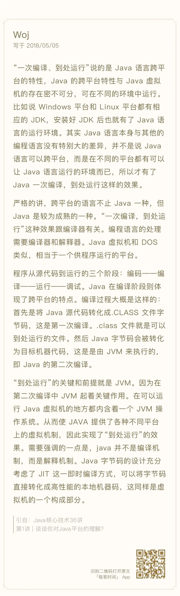
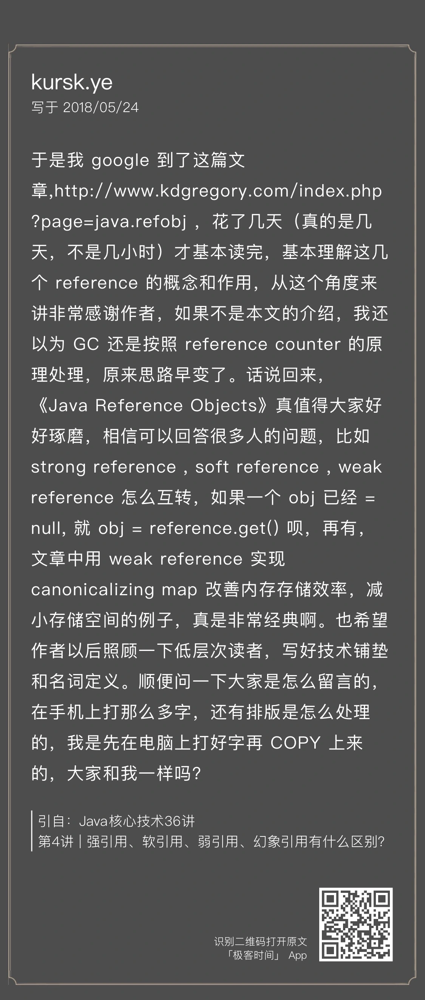
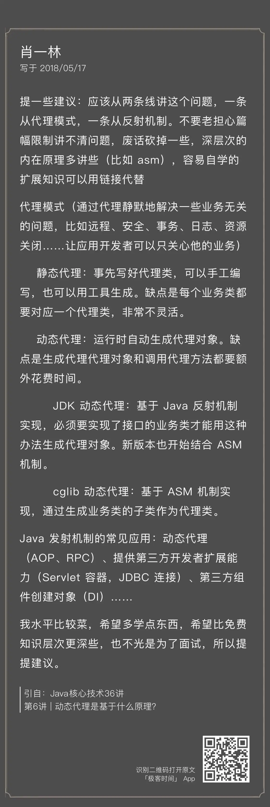
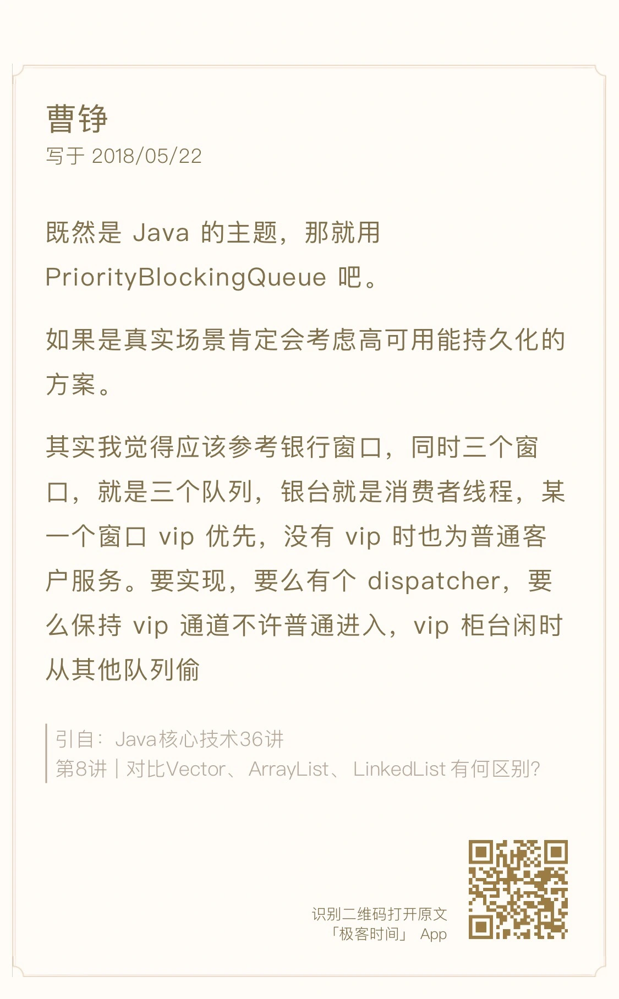
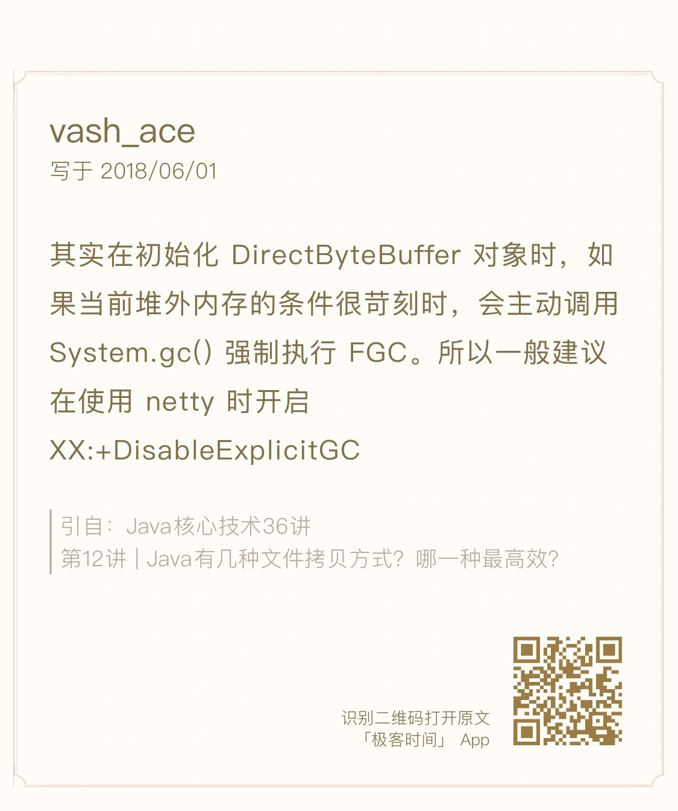
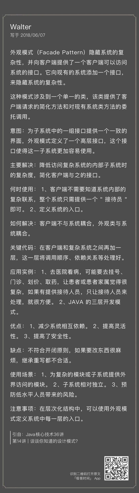

- 00 开篇词 以面试题为切入点，有效提升你的Java内功-极客时间.md
- 01 谈谈你对Java平台的理解？.md
- 02 Exception和Error有什么区别？-极客时间.md
- 03 谈谈final、finally、 finalize有什么不同？-极客时间.md
- 04 强引用、软引用、弱引用、幻象引用有什么区别？-极客时间.md
- 05 String、StringBuffer、StringBuilder有什么区别？-极客时间.md
- 06 动态代理是基于什么原理？-极客时间.md
- 07 int和Integer有什么区别？-极客时间.md
- 08 对比Vector、ArrayList、LinkedList有何区别？-极客时间.md
- 09 对比Hashtable、HashMap、TreeMap有什么不同？-极客时间.md
- 10 如何保证集合是线程安全的 ConcurrentHashMap如何实现高效地线程安全？-极客时间.md
- 11 Java提供了哪些IO方式？ NIO如何实现多路复用？-极客时间.md
- 12 Java有几种文件拷贝方式？哪一种最高效？-极客时间.md
- 13 谈谈接口和抽象类有什么区别？-极客时间.md
- 14 谈谈你知道的设计模式？-极客时间.md
- 15 synchronized和ReentrantLock有什么区别呢？-极客时间.md
- 16 synchronized底层如何实现？什么是锁的升级、降级？-极客时间.md
- 17 一个线程两次调用start()方法会出现什么情况？-极客时间.md
- 18 什么情况下Java程序会产生死锁？如何定位、修复？-极客时间.md
- 19 Java并发包提供了哪些并发工具类？-极客时间.md
- 20 并发包中的ConcurrentLinkedQueue和LinkedBlockingQueue有什么区别？-极客时间.md
- 21 Java并发类库提供的线程池有哪几种？ 分别有什么特点？-极客时间.md
- 22 AtomicInteger底层实现原理是什么？如何在自己的产品代码中应用CAS操作？-极客时间.md
- 23 请介绍类加载过程，什么是双亲委派模型？-极客时间.md
- 24 有哪些方法可以在运行时动态生成一个Java类？-极客时间.md
- 25 谈谈JVM内存区域的划分，哪些区域可能发生OutOfMemoryError-极客时间.md
- 26 如何监控和诊断JVM堆内和堆外内存使用？-极客时间.md
- 27 Java常见的垃圾收集器有哪些？-极客时间.md
- 28 谈谈你的GC调优思路-极客时间.md
- 29 Java内存模型中的happen-before是什么？-极客时间.md
- 30 Java程序运行在Docker等容器环境有哪些新问题？-极客时间.md
- 31 你了解Java应用开发中的注入攻击吗？-极客时间.md
- 32 如何写出安全的Java代码？-极客时间.md
- 33 后台服务出现明显“变慢”，谈谈你的诊断思路？-极客时间.md
- 34 有人说“Lambda能让Java程序慢30倍”，你怎么看？-极客时间.md
- 35 JVM优化Java代码时都做了什么？-极客时间.md
- 36 谈谈MySQL支持的事务隔离级别，以及悲观锁和乐观锁的原理和应用场景？-极客时间.md
- 37 谈谈Spring Bean的生命周期和作用域？-极客时间.md
- 38 对比Java标准NIO类库，你知道Netty是如何实现更高性能的吗？-极客时间.md
- 39 谈谈常用的分布式ID的设计方案？Snowflake是否受冬令时切换影响？-极客时间.md
- 周末福利 一份Java工程师必读书单-极客时间.md
- 周末福利 谈谈我对Java学习和面试的看法-极客时间.md
- 结束语 技术没有终点-极客时间.md
周末福利 谈谈我对Java学习和面试的看法-极客时间
你好，我是杨晓峰。今天是周末，我们稍微放松一下来聊聊“Java 核心技术”之外的内容，正好也借这个机会，兑现一下送出学习奖励礼券的承诺。我在每一讲后面都留下了一道思考题，希望你通过学习，结合自身工作实际，能够认真思考一下这些问题，一方面起到检验学习效果的作用，另一方面可以查漏补缺，思考一下这些平时容易被忽略的面试考察点。我并没有给出这些思考题的答案，希望你通过专栏学习或者查阅其他资料进行独立思考，将自己思考的答案写在留言区与我和其他同学一起交流，这也是提升自己重要的方法之一。
截止到今天，专栏已经更新了 15 讲，走完了基础模块正式进入进阶模块。现在也正是一个很好的时机停下来回顾一下基础部分的知识，为后面进阶的并发内容打好基础。在这里，我也分享一下我对 Java 学习和面试的看法，希望对你有所帮助。
首先，有同学反馈说专栏有的内容看不懂。我在准备专栏文章的时候对一些同学的基础把握不太准确，后面的文章我进行了调整，将重点技术概念进行讲解，并为其他术语添加链接。
再来说说这种情况，有人总觉得 Java 基础知识都已经被讲烂了，还有什么可学的？
对于基础知识的掌握，有的同学经常是“知其然而不知其所以然”， 看到几个名词听说过就以为自己掌握了，其实不然。至少，我认为应该能够做到将自己“掌握”的东西，准确地表达出来。
爱因斯坦曾经说过，“如果你不能把它简单地解释出来，那说明你还没有很好地理解它”。了解 - 掌握 - 精通，这是我们对事物掌握的一个循序渐进的过程。从自己觉得似乎懂了，到能够说明白，再到能够自然地运用它，甚至触类旁通，这是不断提高的过程。
在专栏学习中，如果有些术语很陌生，那么了解它就达到了学习目的，如果能够理解透彻达到掌握的程度当然更好。乐观点来看，反正都是有收获，也完全不必过分担心。
从学习技巧的角度，每个人都有自己的习惯，我个人喜欢动手实践以及与人进行交流。
- 动手实践是必要一步，如果连上手操作都不肯，你会发现自己的理解很难有深度。
- 在交流的过程中你会发现，很多似是而非的理解，竟然在试图组织语言的时候，突然就想明白了，而且别人的观点也验证了自己的判断。技术领域尤其如此，把自己的理解整理成文字，输出、交流是个非常好的提高方法，甚至我认为这是技术工作者成长的必经之路。
再来聊聊针对技术底层，我们是否有必要去阅读源代码？
阅读源代码当然是个好习惯，理解高质量的代码，对于提高我们自己的分析、设计等能力至关重要。
- 根据实践统计，工程师实际工作中，阅读代码的时间其实大大超过写代码的时间，这意味着阅读、总结能力，会直接影响我们的工作效率！这东西有没有捷径呢，也许吧，我的心得是：“无他，但手熟尔”。
- 参考别人的架构、实现，分析其历史上掉过的坑，这是天然的好材料，具体阅读时可以从其修正过的问题等角度入手。
- 现代软件工程，节奏越来越快，需求复杂而多变，越来越凸显出白盒方式的重要性。快速定位问题往往需要黑盒结合白盒能力，对内部一无所知，可能就没有思路。与此同时，通用平台、开源框架，不见得能够非常符合自己的业务需求，往往只有深入源代码层面进行定制或者自研，才能实现。我认为这也是软件工程师地位不断提高的原因之一。
那么，源代码需要理解到什么程度呢？
对于底层技术，这个确实是比较有争议的问题，我个人并不觉得什么东西都要理解底层，懂当然好，但不能代表一切，毕竟知识和能力是有区别的，当然我们也要尊重面试官的要求。我个人认为，不是所有做 Java 开发的人，都需要读 JVM 源代码，虽然我在专栏中提供了一些底层源代码解读，但也只是希望真的有兴趣、有需要的工程师跟进学习。对于大多数开发人员，了解一些源代码，至少不会在面试问到的时候完全没有准备。
关于阅读源代码和理解底层，我有些建议：
- 带着问题和明确目的去阅读，比如，以 debug 某个问题的角度，结合实践去验证，让自己能够感到收获，既加深理解，也有实际帮助，激励我们坚持下来。
- 一定要有输出，至少要写下来，整理心得，交流、验证、提高。这和我们日常工作是类似的，千万不要做了好长一段时间后和领导说，没什么结论。
大家大都是工程师，不是科学家，软件开发中需要分清表象、行为（behavior），还是约定（specification）。喜欢源代码、底层是好的，但是一定要区分其到底是实现细节，还是规范的承诺，因为如果我们的程序依赖于表现，很有可能带来未来维护的问题。
我前面提到了白盒方式的重要性，但是，需要慎重决定对内部的依赖，分清是 Hack 还是 Solution。出来混，总是要还的！如果以某种 hack 方式解决问题，临时性的当然可以，长久会积累并成为升级的障碍，甚至堆积起来愈演愈烈。比如说，我在实验 Cassandra 的时候，发现它在并发部分引用了 Unsafe.monitorEnter()/moniterExit()，这会导致它无法平滑运行在新版的 JDK 上，因为相应内部 API 被移除了，比较幸运的是这个东西有公共 API 可以替代。
最后谈谈我在面试时会看中候选人的哪些素质和能力。
结合我在实际工作中的切身体会，面试时有几个方面我会特别在乎：
- 技术素养好，能够进行深度思考，而不是跳脱地夸夸其谈，所以我喜欢问人家最擅长的东西，如果在最擅长的领域尚且不能仔细思考，怎么能保证在下一份工作中踏实研究呢。当然这种思考，并不是说非要死扣底层和细节，能够看出业务中平凡事情背后的工程意义，同样是不错的。毕竟，除了特别的岗位，大多数任务，如果有良好的技术素养和工作热情，再配合一定经验，基本也就能够保证胜任了。
- 职业精神，是否表现出认真对待每一个任务。我们是职场打拼的专业人士，不是幼儿园被呵护的小朋友，如果有人太挑活儿，团队往往就无法做到基本的公平。有经验的管理角色，大多是把自己的管理精力用在团队的正面建设，而不是把精力浪费在拖团队后腿的人身上，难以协作的人，没有人会喜欢。有人说你的职业高度取决于你“填坑”的能力，我觉得很有道理。现实工作中很少有理想化的完美任务，既目标清晰又有挑战，恰好还是我擅长，这种任务不多见。能够主动地从不清晰中找出清晰，切实地解决问题，是非常重要的能力。
- 是否 hands-on，是否主动。我一般不要求当前需要的方面一定是很 hands-on，但至少要表现出能够做到。
下面放出中奖名单和精选留言，送出 15 元学习奖励礼券，希望我的《Java 核心技术 36 讲》不仅能带你走进大厂 Java 面试场景，还能帮你温故知新基础知识，构建你的 Java 知识体系。也欢迎你在这里与我交流面试、学习方面的困惑或心得，一起畅所欲言、共同进步。







© 2019 - 2023 Liangliang Lee. Powered by gin and hexo-theme-book.